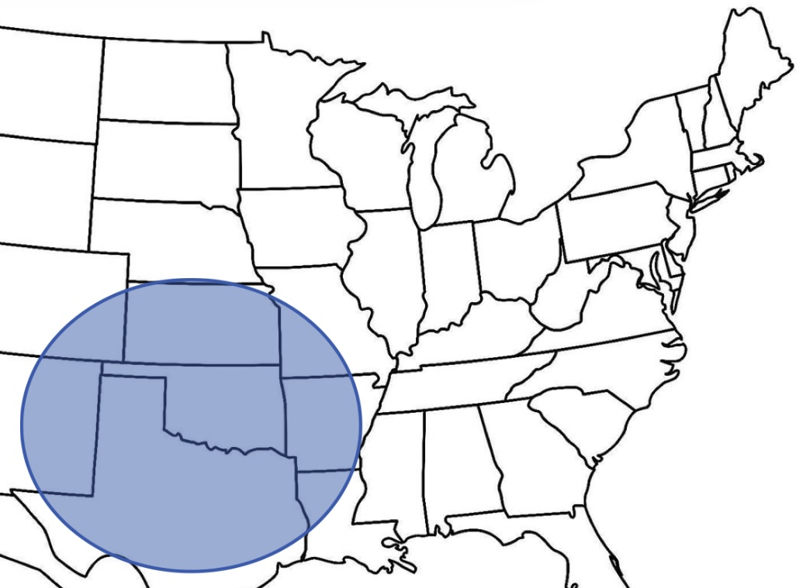
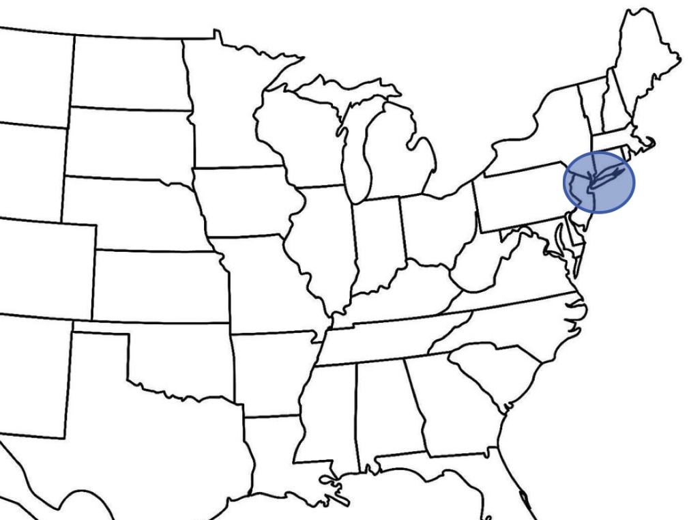
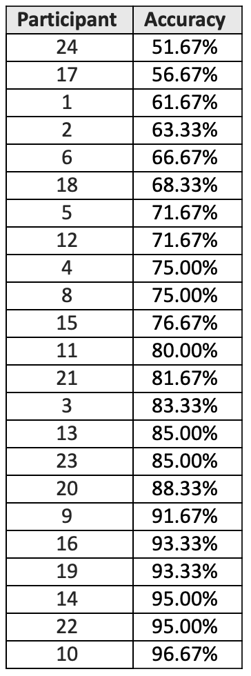
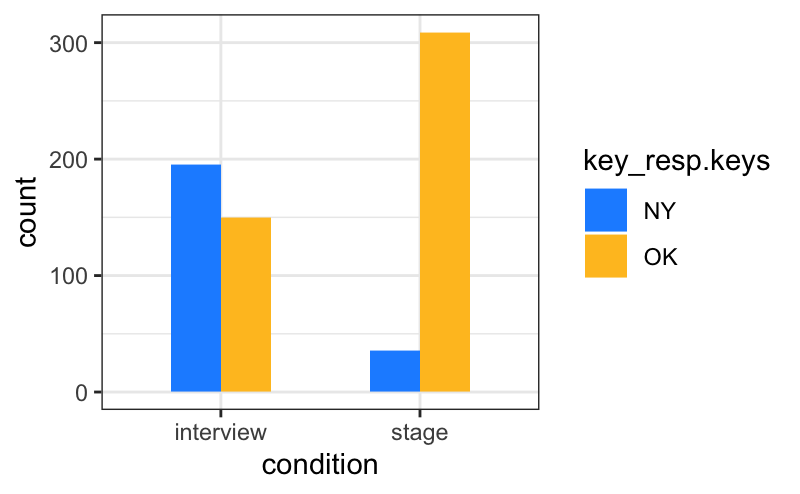
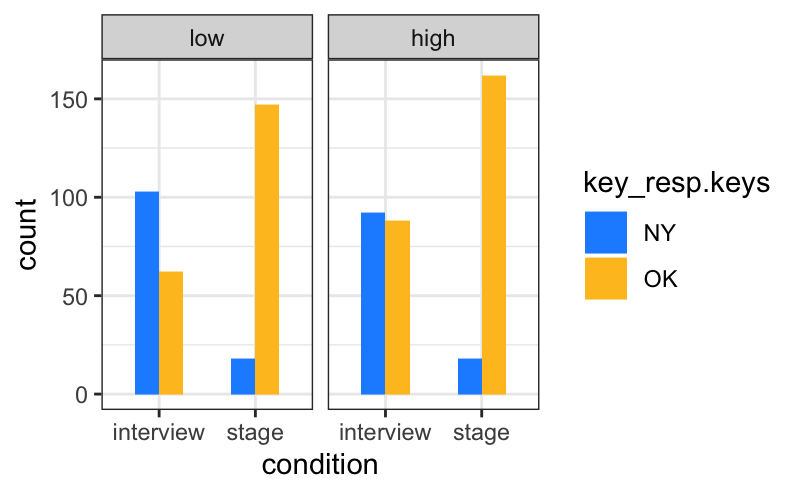
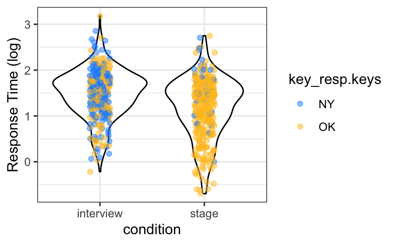

Author: Cicely James M. Campen
Research Mentor: Dr. Kevin McGowan
Introduction
The 18 minute talking blues song Alice’s Restaurant Massacree has become a thanksgiving classic since it’s release in 1967 (Guthrie, 1967). The artist behind the song is famous folk artist Arlo Guthrie, son of the also famous folk artist Woody Guthrie. Woody Guthrie (who wrote well known songs like This Land Is Your Land and All You Fascists Bound to Lose) was born and raised in Okemah, Oklahoma and Pampa, Texas, growing up to have an accent reflective of that region. However, although he is known to have an accent quite similar to that of his father’s, Arlo was raised in Brooklyn, New York City. Additionally, during performances – like in Alice’s Restaurant or at the 1969 Woodstock Music and Art Fair – Arlo is known to have a distinct folk accent which appears to be more exaggerated than his accent when not performing.
Research Questions
- Does Arlo Guthrie have an accent closer to that of his father or of where he’s from?
- Does Arlo Guthrie purposefully emulate the folk accent while performing as a way of indexing himself with the American folk genre (Bell 2014, Coupland, 2011)?
Methodology
- Stimuli: The experiment included 100 audio clips, a few seconds long each, of people speaking; 30 were Arlo Guthrie (15 from interviews and 15 from performances), 10 were Woody Guthrie, and the rest were filler audios of famous Oklahoma/Texas or New York/New Jersey natives (e.g. Buddy Holly and Christopher Walken) used as a control.
- Participants: We ran the experiment for 23 participants, aged 18 to 25. While we had participants who considered themselves to be from regions across the U.S., most of our participants considered themselves to be from Kentucky.
- Trials: For each trial, the participants were shown a screen with two maps – one circling areas like Oklahoma and north Texas and the other circling areas like New York City and upper New Jersey (see Figure 1) – and heard an audio clip of a speaker. The participants were told to press the “z” key if they thought the speaker in the audio was from the region circled on the left map (OK/TX), and the “m” key if they thought the speaker was from the region circled on the right map (NY/NJ).


Figure 1: Maps circling Oklahoma/Texas and New York City/Upper New Jersey respectively
- Data: We recorded the participants’ responses for each audio clip as well as their reaction time for each trial. We did not exclude any participants due to low accuracy or recognition of specific stimuli.
Example Audios
Arlo interview audio
Arlo interview audio
Woody Guthrie audio
Arlo stage audio
Arlo stage audio
Results

Figure 2: Participant Accuracy listed from lowest to highest

Figure 3: Arlo audio responses by condition

Figure 4: Arlo audio responses by condition and accuracy
- Participant Accuracy: Since we had an expected result of either OK/TX or NY/NJ for the control audios, we were able to calculate the accuracy for each participant (see Figure 2). This table shows us the 23 participants’ accuracy for just the control audios, listed from lowest to highest. It tells us that 12 participants got an accuracy of 80% more and 11 participants got an accuracy of less than 80%. Also, that the lowest accuracy was 51% (just above chance) and the highest accuracy was 96%.
- Arlo Audio Responses: When looking at the Arlo audios only, we separated them by their condition, interview and stage, and counted the number of OK and NY responses (see Figure 3). We found that for audios where he is on stage, participants appear to be much more likely to say Arlo is from the OK/TX region and for audios from interviews, participants appear have a harder time deciding where Arlo sounds like he is from.
- Separation by accuracy: We then ran the same analysis after separating the participants into two groups based on their accuracy for the control audios; participants with accuracy of less than 80% were placed into the low group and participants with accuracy of 80% or higher were placed into the high group. After separating our two participants, it appears that participants with a lower accuracy for the control audios were more likely to say that in audios from interviews Arlo sounded like he was from the NY/NJ region than participants with a higher accuracy for the control audios (see Figure 4).
Analysis
- Statistics: To make sure our results were statistically significant, we used a Linear Mixed Model for both the Arlo audio responses separated by condition and the responses separated by condition and accuracy. From this analysis, we learned that separating the Arlo audios by condition is statistically significant, meaning that, for the stage audios, participants actually were much more likely to say Arlo Guthrie is from the OK/TX region. However, when applying this regression model to our Arlo responses separated by both condition and accuracy, we learned that even though it appears that, for the interview audios, lower accuracy participants were more likely to say Arlo sounded like he was from the NY/NJ than higher accuracy participants, this difference is not significant.
- Response Time: To take a closer look at participants’ responses, we recorded response times, then log-transformed and compiled them into a violin plot (see Figure 5). What we learned from looking at the response times is that for the interview audios, participants seemed to take longer to decide which region Arlo sounded like he was from and that for the stage audios, responses were quicker and had few NY/NJ responses. We also applied the regression model to the response times and found them to be statistically significant.

Figure 5: Response time in a violin plot
Conclusion
Since only one of our participants was near chance for our control audios and the rest, even participants in the low group, were more accurate, they seem to be quite capable of using our maps and rough regional labels to correctly identify the control stimuli. Therefore, the fact that participants were much more likely to say Arlo sounds like he is from the OK/TX region, for the stage audios compared to the interview audios, supports the idea that he purposefully emulates the folk accent. If continuing this project, I would like to examine the responses for specific audio stimuli and run the experiment for more participants.
References
Bell, Allan. The Guidebook to Sociolinguistics. Wiley-Blackwell, 2013. 1st ed. Blackwell Publishing Ltd., 2014, pp. 314-317
Coupland, Nikolas. “Voice, Place and Genre in Popular Song Performance.” Journal of Sociolinguistics 15, no. 5 (2011): 573–602. https://doi.org/10.1111/j.1467-9841.2011.00514.x.
Guthrie, Arlo. Alice’s Restaurant Massacree. Reprise Records Inc., 1967. 18:36. https://www.youtube.com/watch?v=WaKIX6oaSLs.
Acknowledgements
I would like to thank Dr. Kevin McGowan for his invaluable assistance with this project, Dr. Andrew Byrd for his help in this project’s beginning stages, and both Kendal Smith and Mathew Thyne for keeping me sane.